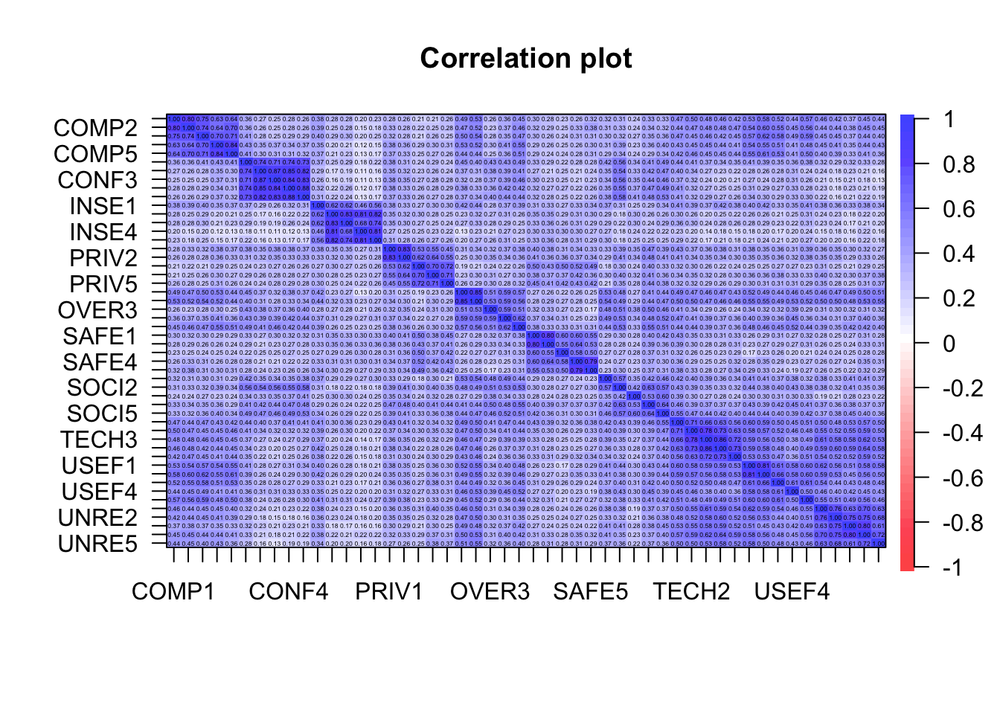
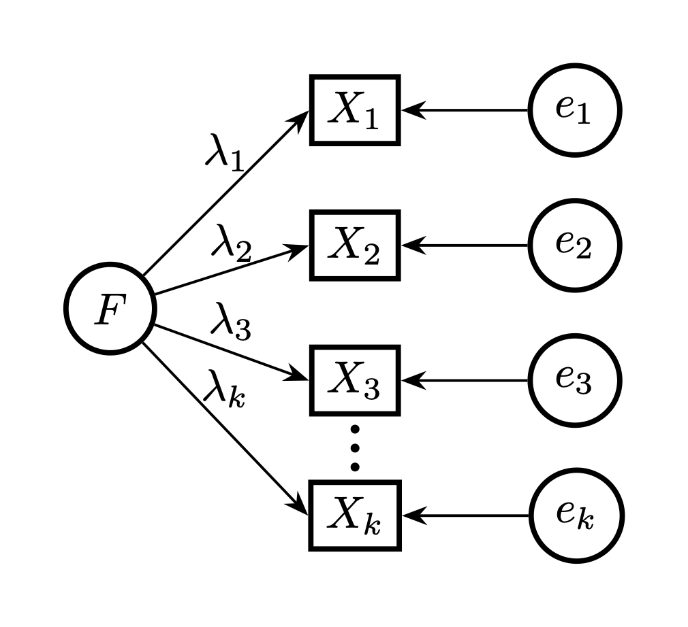
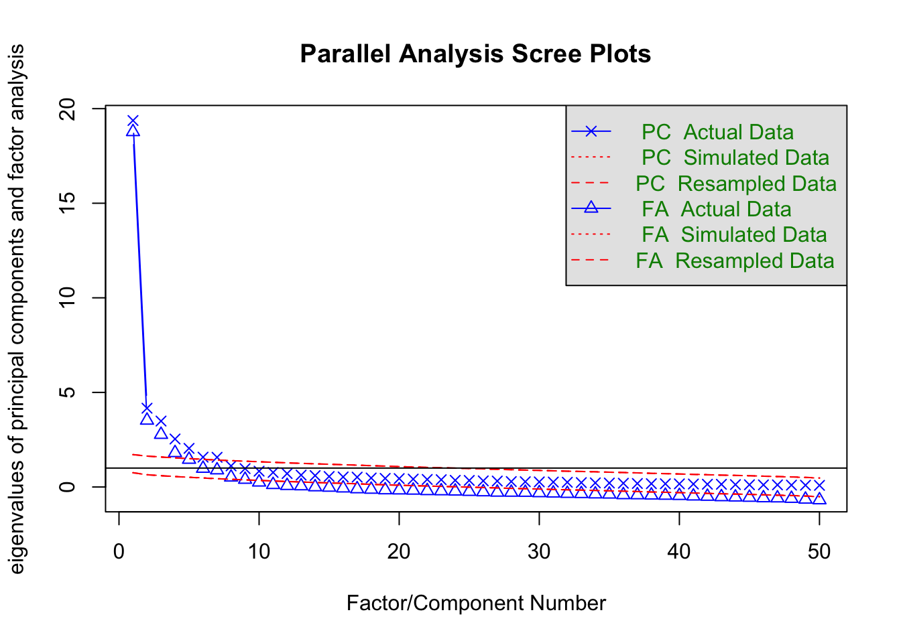

Samling 8. april. Latente variabler og EFA
Agenda
Psykologiske konstrukter
Latente variable
Faktormodellen
Eksplorativ faktor analyse i R
Latent variabel modell for konstrukter
Psykologiske konstrukter
- Psykologi omhandler ofte såkalte konstrukter som ikke er direkte observerbare
- Vi måler disse konstruktene ved å lage items (spørsmål) som avspeiler konstruktet. Jo flere items jo bedre ift reliabilitet og validitet. Men da blir spørreskjemaene lange så vi kan ikke ha for mange items.
- Mange konstrukter har etablerte batterier dvs spørreskjema som vi kan tenke på som måleinstrumenter
Terminologi
Latent variabel, konstrukt, faktor: synonymer for en variabel som vi ikke kan observere.
Indikator, observerbar variabel, item. Synonymer for variabler vi faktisk kan observere i datasettet. Indikatorer blir ofte gruppert sammen og oppfattet som om de måler en faktor
-EFA eksplorative modellering med faktorer. Alle indikatorer har lov å lade på alle faktorer. Brukes til å finne ut hvilke faktorer som evt ligger bak de observerte dataene
CFA: confirmatory faktor analyse. Her vet man hvilke item som lader på hvilke indikatorer.
SEM strukturell equation modeling. Dette er som CFA bare at vi har regresjoner mellom de latente variablene
Statistisk modell for konstrukter:
Vi tenker oss at items i et batteri er gendert av en latent variabel som representerer konstruktet:
\[ Svar= \lambda \cdot F + \epsilon \]
Svar på et spørsmål er bestemt av
Faktor-scoren \(F\), som er den sanne verdien til en latent variabel \(F\), og hvor sterkt itemet lader på faktoren \(F\) ( \(\lambda\) ).
Målefeilen \(\epsilon\). Den sier at vi ikke kan måle verdien av \(F\) nøyaktig. vi tar høyde for at itemsvar har støy. Dette er en styrke med faktormodeller. Mange modeller i feks økonomi tar ikke høyde for målefeil på variabelnivå. Feks har vi brukt summeskårer i regresjonsmodeller.
Faktormodell og stidiagram
Vi kaller den latente variabelen for en faktor. X’ene er her items, og \(F\) den latente variabelen. Målefeil er \(e\). Sirkler: latente. Firkanter: observerte

Korrelasjoner stress-skalaen
I følge skalaens skapere, skulle det være ti faktorer. Men vi får ikke det i det norske datasettet: Kan se ut som om vi har 6 relativt tydelig faktorer.
Beregne faktor-ladninger i lavaan
Pakken lavaan er beregnet på latente variabler.
library(lavaan);library(tidyverse)
model <- "COMP =~ COMP1+COMP2+COMP3+COMP4+COMP5"
f <- cfa(model, data=data)#confirmatory factor analysis
head(standardizedsolution(f),5) lhs op rhs est.std se z pvalue ci.lower ci.upper
1 COMP =~ COMP1 0.833 0.017 49.808 0 0.800 0.866
2 COMP =~ COMP2 0.853 0.015 55.706 0 0.823 0.883
3 COMP =~ COMP3 0.857 0.015 57.274 0 0.828 0.887
4 COMP =~ COMP4 0.830 0.017 48.964 0 0.797 0.863
5 COMP =~ COMP5 0.853 0.015 55.776 0 0.823 0.883Faktorladningene ligger i intervallet (0.83, 0.85). Ladningene er alltid mindre enn 1, så dette er bra.
SOCI har dårligere indikatorer som COMP
SOCI har svakere ladninger enn COMP
library(lavaan)
model <- "SOCI =~ SOCI1+SOCI2+SOCI3+SOCI4+SOCI5"
f <- cfa(model, data=data)#confirmatory factor analysis
head(standardizedsolution(f),5) lhs op rhs est.std se z pvalue ci.lower ci.upper
1 SOCI =~ SOCI1 0.595 0.034 17.321 0 0.528 0.662
2 SOCI =~ SOCI2 0.756 0.025 30.044 0 0.707 0.805
3 SOCI =~ SOCI3 0.655 0.031 21.067 0 0.594 0.716
4 SOCI =~ SOCI4 0.800 0.023 35.314 0 0.756 0.844
5 SOCI =~ SOCI5 0.805 0.022 36.022 0 0.762 0.849Faktorladningene ligger i intervallet (0.6, 0.8). Dette er også akseptabelt.
Sum scores vs latente variabler
Vi ønsker å finne korrelasjon mellom konstruktene COMP og SOCI. Den enkle måten er å lage sum skårer
compsum <- rowSums(select(data, contains("COMP")))
socisum <- rowSums(select(data, contains("SOCI")))
cor(compsum, socisum)[1] 0.4564993Heller ta høyde for målefeil i en faktormodell:
model <- "SOCI =~ SOCI1+SOCI2+SOCI3+SOCI4+SOCI5; COMP=~COMP1+COMP2+COMP3+COMP4+COMP5"
f <- cfa(model, data=data)
tail(standardizedsolution(f),1 )[, 1:4] lhs op rhs est.std
23 SOCI ~~ COMP 0.51Summeskårer gir lavere korrelasjon!
Regresjon med summeskårene
Vi standardiserer summeskårene og ser på effekt av kjønn og soci på comp
reg <- lm(scale(compsum)~ scale(socisum)+data$job_level)
reg$coefficients (Intercept) scale(socisum) data$job_level
0.2983563 0.4570742 -0.2586511 Bedre: regresjon med de latente variablene
Det er bedre å kjøre regresjonen med latente variable. Dette kalles structural equation modelling
model <- "SOCI =~ SOCI1+SOCI2+SOCI3+SOCI4+SOCI5; COMP=~COMP1+COMP2+COMP3+COMP4+COMP5; COMP~SOCI+job_level"
f <- cfa(model, data=data)
standardizedsolution(f) %>% filter(op=="~") %>% select(1:4) lhs op rhs est.std
1 COMP ~ SOCI 0.511
2 COMP ~ job_level -0.097Fordelen med latente variabler
Latent variabel modellering tar høyde for at item har målefeil. Det gjør ikke summeskårer
Latent variabel modellering tar også høyde for at hvert item har forskjellig bidrag til faktoren (forskjellige ladninger). Det gjør ikke summeskårer, der hvert item teller likt
Eneste fordelen med summeskårer er at det er mer intuitivt og håndfast en en latent(usynlig) variabel
Å utvikle skalaer: EFA
EFA
Vi har kjørt noen confirmatory faktor analyser (CFA)
Men første trinn når man utarbeider et måleinstrument er å utføre EFA
Da kan ta bort item som ikke fungerer. Enten fordi de lader på flere faktorer, eller fordi de har lav ladning
Man kan gruppere items og tolke disse som indikatorer for et konstrukt
EFA med psych pakken
I EFA angir vi hvor mange faktorer. COMP og SOCI items gir en pen to-faktor struktur:
stress_trim = data %>% select(matches("COMP|SOCI"))#10 items
f <- fa(stress_trim, 2)#spesifiserer 2 faktorer
f$loadings
Loadings:
MR1 MR2
COMP1 0.835
COMP2 0.864
COMP3 0.853
COMP4 0.799
COMP5 0.867
SOCI1 0.555
SOCI2 0.748
SOCI3 0.670
SOCI4 0.801
SOCI5 0.814
MR1 MR2
SS loadings 3.571 2.625
Proportion Var 0.357 0.262
Cumulative Var 0.357 0.620Bestemme antall faktorer
vanskelig problem: Hvor mange faktorer ligger til grunn for en skala? I stress-studien trodde vi på 10 faktorer i utgangspunktet, men endte opp med 7 faktorer.
Vi skal bruke parallel-analyse for å studere dette.
Merk at det finnes mange metoder, som ofte ikke er enige!
Her må man bruke sin forståelse av feltet og itemene til å finne den beste løsningen!
Parallell analyse for finne antall faktorer
Et scree plot (Catell, 1966) viser de såkalte egenverdiene. Hver egenverdi svarer til en faktor. Typisk vil plottet ha en “knekk” og antall faktorer er da antall egenverdier før knekken. Parallell analyse er en videreutvikling av dette. Vi prøver med alle 50 indikatorer i stressdataene
fa.parallel(select(data, 11:ncol(data)))
Parallel analysis suggests that the number of factors = 9 and the number of components = 7